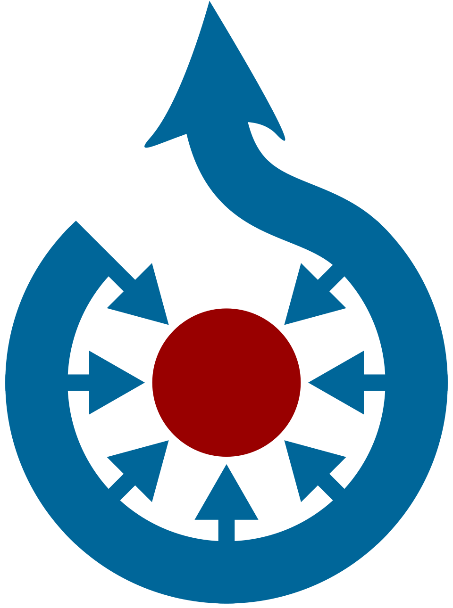

위키미디어 공용 Wikimedia Commons
위키미디어 공용(Wikimedia Commons)은 그림, 소리 등 자유 콘텐츠 멀티미디어 파일의 저장소이며, 위키미디어 재단의 프로젝트 중 하나이다. 올라온 파일은 다른 모든 위키미디어 프로젝트에서 함께 이용할 수 있다.
최종 업데이트

위키미디어 공용은 어떤 브랜드인가
위키미디어 공용(Wikimedia Commons)은 그림, 소리 등 자유 콘텐츠 멀티미디어 파일의 저장소이며, 위키미디어 재단의 프로젝트 중 하나이다. 올라온 파일은 다른 모든 위키미디어 프로젝트에서 함께 이용할 수 있다.
위키미디어 공용은 어떻게 시작되고 성장했나
위키미디어 공용에 대한 최초의 아이디어는 2004년 3월 에릭 묄러로부터 나왔다. 같은 파일이 각 언어별 위키미디어 프로젝트마다 중복으로 올려져 용량이 낭비되는 일을 막자는 것이 가장 주요한 제안 이유였다.
프로젝트는 2004년 9월에 시작되었다. 2013년 7월에는 편집 횟수가 1억 회에 도달했다.
2018년에는 STL 형식으로 입체 모델을 업로드할 수 있게 되었으며, 첫 입체 모델 중 하나는 2015년 이라크 레반트 이슬람국에 의해 파괴된 팔미라의 알라트 사자상을 복원한 것이었다.
위키미디어 공용의 브랜드 아이덴티티는 무엇인가
위키미디어 재단이 운영하는 공용 미디어 저장소로, 한 번 올린 자유 저작물을 모든 위키미디어 프로젝트가 함께 쓰게 한다는 점이 특징이다.
위키미디어 공용의 대표 제품과 서비스는 무엇인가
자유 콘텐츠인 그림, 소리 등의 멀티미디어 파일을 저장하고 다른 위키미디어 프로젝트에 제공하는 저장소 서비스이다. 허용하는 라이선스는 GNU 자유 문서 사용 허가서, 일부 크리에이티브 커먼즈 라이선스, 공공누리 제1유형 라이선스, 사용 제약이 없는 퍼블릭 도메인 등이다.
개별 프로젝트에 파일을 올리는 것도 여전히 허용되며, 공정 이용처럼 공용에서는 금지하지만 각 프로젝트의 정책에 따라 허용되는 파일에 쓰인다. 2018년부터는 STL 형식의 입체 모델도 올릴 수 있다.
위키미디어 공용은 지금 어떤 상태인가
2012년 미국 국립문서기록관리청은 약 10만 개의 디지털 이미지를 올렸고, 2022년 미국 디지털 공립도서관은 200만 개 이상의 파일을 업로드했다. 유럽의 문화유산 웹사이트 유로피아나는 공용을 통해 디지털 이미지를 공유하며, 세계보건기구는 코로나19 범유행 기간에 협업해 인포그래픽을 올렸다.
아마추어 포르노그래피 업로드를 둘러싼 비판도 이어져 왔다.
위키미디어 공용 로고는 어떻게 변해왔나
자주 묻는 질문
위키미디어 공용는 언제 설립되었나요?
위키미디어 공용는 2004년 설립되었습니다.
위키미디어 공용는 어떤 산업의 브랜드인가요?
위키미디어 공용는 미디어·엔터테인먼트 분야의 브랜드입니다.
위키미디어 공용의 브랜드 아이덴티티는 무엇인가요?
위키미디어 재단이 운영하는 공용 미디어 저장소로, 한 번 올린 자유 저작물을 모든 위키미디어 프로젝트가 함께 쓰게 한다는 점이 특징이다.
위키미디어 공용의 대표 제품은 무엇인가요?
자유 콘텐츠인 그림, 소리 등의 멀티미디어 파일을 저장하고 다른 위키미디어 프로젝트에 제공하는 저장소 서비스이다.
위키미디어 공용는 현재 어떤 상태인가요?
2012년 미국 국립문서기록관리청은 약 10만 개의 디지털 이미지를 올렸고, 2022년 미국 디지털 공립도서관은 200만 개 이상의 파일을 업로드했다.
위키미디어 공용의 창업자는 누구인가요?
위키미디어 공용의 창업자는 에릭 묄러, 지미 웨일스, 위키미디어 재단입니다(위키데이터 기준).
위키미디어 공용의 공식 웹사이트는 어디인가요?
위키미디어 공용의 공식 웹사이트는 https://commons.wikimedia.org/ 입니다.
출처와 검증
위키미디어 공용 관련 참고: 공식 웹사이트 · 위키데이터 Q565 · 한국어 위키백과 · 영어 위키백과. 브랜드명은 한글과 원어를 함께 표기하되 데이터에 없는 표기는 만들지 않습니다. 기원 국가·설립연도는 검수된 정의문에서 확인된 값을 우선하고, 없을 때만 공식 웹사이트 URL이 일치하는 위키데이터 개체의 값을 씁니다. 탄생일의 월·일은 위키데이터, 위키백과 정보상자, 본문 가운데 같은 연월로 확인되는 값만 싣고, 출처끼리 다르면 싣지 않습니다. 위키데이터 값은 2026-10-18 기준입니다.